length(lsf.str("package:base")) + length(lsf.str("package:stats")) + length(lsf.str("package:utils"))
#> [1] 1947Week 3
Writing Functions
Over the last few weeks :
We have learned a lot!
tools for reading and writing data:
- read_sf / write_sf
- read_csv / write_csv
- read_excel
tools for data maniputation
- filter
- select
- mutate
- group_by
- summarize
- rollmean, lag
tools to manage/manipulate data type/structure
- as.numeric
- as.factor
- st_as_sf
- data.frame
tools for merging and shaping data
- inner_join
- left_join
- right_join
- full_join
- pivot_longer
- pivot_wider
tools for measuring geometries:
- st_distance
- st_area
- st_length
- set_units / drop_units
These tools are all functions
R is a statistical computing language that provides features as functions
Even with just its base installation, R provides hundreds of functions:
- sf provides over 100 more
length(lsf.str("package:sf"))
#> [1] 149- and the core tidyverse packages (that we use) an additional ~750
length(lsf.str("package:dplyr")) +
length(lsf.str("package:ggplot2")) +
length(lsf.str("package:tidyr")) +
length(lsf.str("package:forcats")) +
length(lsf.str("package:purrr"))
#> [1] 1025To date …
We have been using functions written for us - mostly by
sfand thetidyverseThis how any commercial GIS suite operates as well
Analysis and workflows are limited to the tools kits and options exposed to the user
In R, a lot more is actually exposed!
Every time we install a new package, we download code that provides new specific features (as functions)
Every time we attach a package to a working session (
library()) we are making those functions available/visible
Functions are objects
Just like
x = 10binds the value of 10 to the name x creating an object visible in the environment,functions are objects that can be called by name to execute a set of directions over defined arguments.
class(sf::st_intersects)
#> [1] "function"
class(sf::st_as_sf)
#> [1] "function"Our own functions are visable as objects in the environemnt
x = 10
y = data.frame(x = 1:10, y = 10:1)
f = function(x,y){ x + y }
Advancing your programming skills
One of the best ways to improve your skills as a data scientist is to write functions.
Functions allow you to automate common tasks in a more general way than copy-and-pasting.
The more times you apply a function, the more incentive you have to optimize it for speed/accuracy
The more creative/unique your analyses and questions can be
So why write functions opposed to scripts?
The process can be named
As requirements change, you only need to update code in one place
You eliminate the chance of making incidental mistakes when you copy and paste (forgetting to change
dist_to_statetodist_to_border).functions can be ‘sourced’ into Rmd files and R Scripts
You save yourself time
Rule of thumb
Data is the first argument (better for pipes!)
Whenever you have copy-and pasted code more than twice you should write a function
For example how many times have we coded:
states = USAboundaries::us_states() |>
filter(!name %in% c("Hawaii", "Puerto Rico", "Alaska"))Or made the same table with
knitr/kableExtraonly changing thecol.namesanddata.frameOr calculated a distance, changed the units, and dropped them?
All of these task are repetitive and prone to making errors that could impact our analysis but not break our code…
The form of a function:
Creating a function follows the form:
name = function(arg1, arg2, *){
code
..
return(...)
}Where:
nameis the function name (e.g.st_as_sf)- This is the name on which R is able to call the object
arg1is the first inputarg2is the second input*is any other argument you want to definecode ...defines the instructions to carry out onarg1andarg2return(...)is what the function returns
Defining a function
- To define a function we need to identify the code we have, and what can/should generalized for future uses?
states = USAboundaries::us_states() |>
filter(!name %in% c("Hawaii", "Puerto Rico", "Alaska"))Here the input data (us_states) could change
So could the variable name we filter by (name)
Function Signiture
So, lets start with a function that takes general input data and a variable name
get_conus = function(data, var){
}Function arguments
Function arguments typically include two two broad sets: - the data to compute on, - arguments that control the details of the calculation
In
st_transformxis the data,crsis the proj4string/EPSG codeIn
ms_simplifyinputis the data,keepdefines the directionsIn
get_conus:dataprovides the data,vardefines the column to filter
- Generally, data arguments should come first.
- Detail arguments should go on the end
- It can be useful - and good practice - to define default values.
- should almost always be the most common value.
- The exceptions to this rule are to do with safety of the process.
- e.g.
na.rm = FALSE
- e.g.
Code body
We then have to carry these generalizations into the function directions using the arguments as our operators:
get_conus = function(data, var){
conus = filter(data, !!var %in% c("Hawaii", "Puerto Rico", "Alaska"))
return(conus)
}here, we replace
us_states()withdatawe use
get()to return the value of a named objectWe assign our filtered object to the name
conusAnd explicitly return the
conusobject from the functionThe value returned by the function is usually the last evaluated statement, if we don’t specify return we can take advantage of this default:
get_conus = function(data, var){
filter(data, !get(var) %in% c("Hawaii", "Puerto Rico", "Alaska"))
}Using our function:
Like any object, we have to run the lines of code to save it as an object before we can use it directly in our code:
But then …
States
x = get_conus(data = us_states(), var = "name")
plot(x$geometry)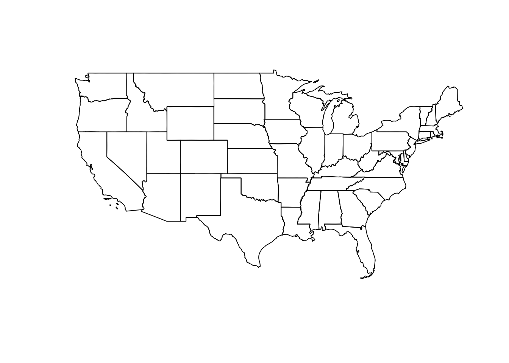
Counties
x2 = get_conus(data = us_counties()[,-9], var = "state_name")
plot(x2$geometry)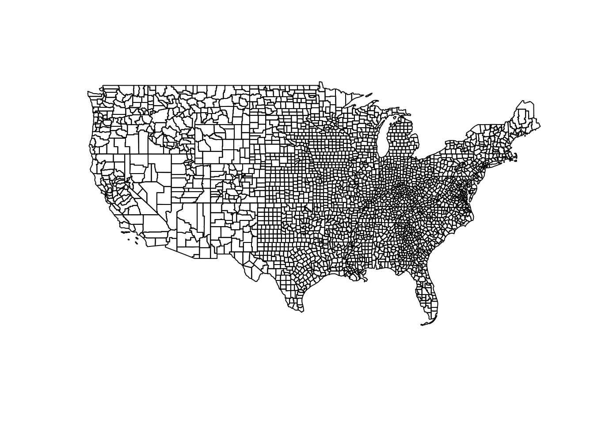
Cities
cities = read_csv("../labs/data/uscities.csv") |>
st_as_sf(coords = c("lng", "lat"), crs = 4326) |>
get_conus("state_name")
#> Rows: 31254 Columns: 17
#> ── Column specification ────────────────────────────────────────────────────────
#> Delimiter: ","
#> chr (9): city, city_ascii, state_id, state_name, county_fips, county_name, s...
#> dbl (6): lat, lng, population, density, ranking, id
#> lgl (2): military, incorporated
#>
#> ℹ Use `spec()` to retrieve the full column specification for this data.
#> ℹ Specify the column types or set `show_col_types = FALSE` to quiet this message.
plot(cities$geometry, pch = 16, cex = .1)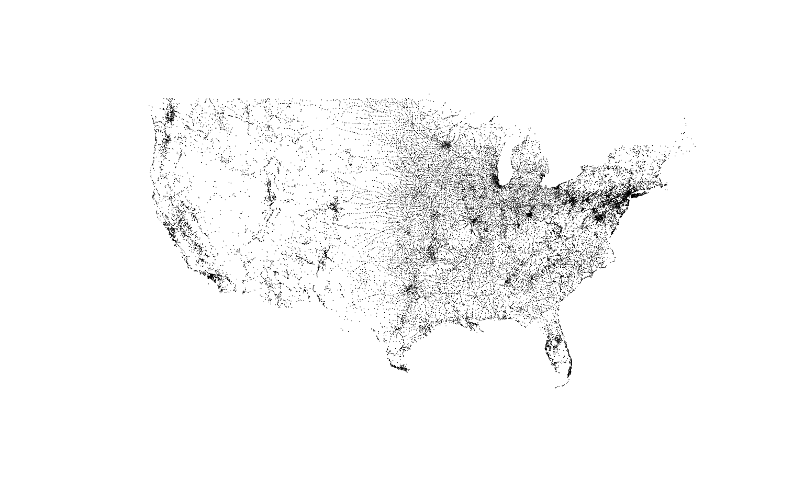
It’s ok to be more detailed
Another advantage of functions is that if our requirements change, we only need to make the change our code in one place.
This also means we can spend more time fine-tuning our code since we know it will be recycled.
Here we can be more focused and make sure to remove other potential “non-conus” states from any input object:
get_conus = function(data, var){
filter(data, !get(var) %in%
c("Hawaii", "Puerto Rico", "Alaska",
"Guam", "District of Columbia"))
}Using our function
conus = get_conus(us_states(), "name")
nrow(conus)
#> [1] 48Point-in-Polygon Case Study
The power of GIS lies in analyzing multiple data sources together.
Often the answer you want lies in many different layers and you need to do some analysis to extract and compile information.
One common analysis is Points-in-Polygon (PIP).
PIP is useful when you want to know how many - or what kind of - points fall within the bounds of each polygon

Data
CONUS counties
counties = st_transform(us_counties()[,-9], 5070) |>
select(name, geoid, state_name) |>
get_conus("state_name")CONUS Starbucks
starbucks = read_csv('data/directory.csv') |>
filter(!is.na(Latitude), Country == "US") |>
st_as_sf(coords = c("Longitude", "Latitude"), crs = 4326) |>
st_transform(5070) |>
st_filter(counties) |>
select(store_name = `Store Name`)Colorado Counties
co = filter(counties, state_name == "Colorado")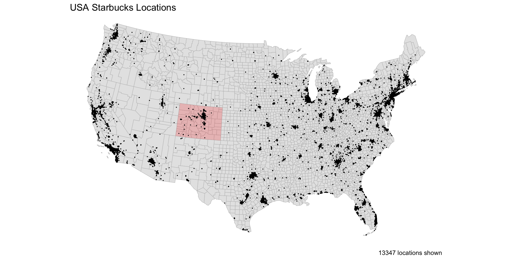
Step 1: Spatial Join
To count the Starbucks locations in CA counties, we start by joining the CA counties to the locations:
Here we uses the
countiesas the x table and the locations as the y tableThis is because we want to add the starbucks information to the
countysf object.Remember the default of
st_joinis aleft_joinon thest_intersectspredicate
(starbucks1 = st_join(co, starbucks))
#> Simple feature collection with 511 features and 4 fields
#> Geometry type: MULTIPOLYGON
#> Dimension: XY
#> Bounding box: xmin: -1146480 ymin: 1566911 xmax: -504612.5 ymax: 2073715
#> Projected CRS: NAD83 / Conus Albers
#> First 10 features:
#> name geoid state_name store_name
#> 1 Yuma 08125 Colorado <NA>
#> 2 San Juan 08111 Colorado <NA>
#> 3 Baca 08009 Colorado <NA>
#> 4 Prowers 08099 Colorado <NA>
#> 5 Custer 08027 Colorado <NA>
#> 6 Fremont 08043 Colorado City Market - Canon City #417
#> 7 Mesa 08077 Colorado I-70 Business Loop & 32 Rd - C
#> 7.1 Mesa 08077 Colorado Hwy 6 & 25 Rd - Grand Junction
#> 7.2 Mesa 08077 Colorado City Market-Grand Junction #444
#> 7.3 Mesa 08077 Colorado City Market - Grand Junction #432
#> geometry
#> 1 MULTIPOLYGON (((-575240.5 1...
#> 2 MULTIPOLYGON (((-1042591 16...
#> 3 MULTIPOLYGON (((-617878.8 1...
#> 4 MULTIPOLYGON (((-587200.4 1...
#> 5 MULTIPOLYGON (((-847581.3 1...
#> 6 MULTIPOLYGON (((-863875.9 1...
#> 7 MULTIPOLYGON (((-1114392 18...
#> 7.1 MULTIPOLYGON (((-1114392 18...
#> 7.2 MULTIPOLYGON (((-1114392 18...
#> 7.3 MULTIPOLYGON (((-1114392 18...Step 2: Point counts by Polygon
count() is a dplyr function that “lets you quickly count the unique values of one or more variables: df |> count(a, b) is roughly equivalent to df |> group_by(a, b) |> summarize(n = n())”
(count(starbucks1, geoid))
#> Simple feature collection with 64 features and 2 fields
#> Geometry type: MULTIPOLYGON
#> Dimension: XY
#> Bounding box: xmin: -1146480 ymin: 1566911 xmax: -504612.5 ymax: 2073715
#> Projected CRS: NAD83 / Conus Albers
#> First 10 features:
#> geoid n geometry
#> 1 08001 35 MULTIPOLYGON (((-765835.6 1...
#> 2 08003 1 MULTIPOLYGON (((-878691.4 1...
#> 3 08005 58 MULTIPOLYGON (((-769015.2 1...
#> 4 08007 1 MULTIPOLYGON (((-1004101 16...
#> 5 08009 1 MULTIPOLYGON (((-617878.8 1...
#> 6 08011 1 MULTIPOLYGON (((-640691.8 1...
#> 7 08013 36 MULTIPOLYGON (((-819541.3 1...
#> 8 08014 9 MULTIPOLYGON (((-775389.1 1...
#> 9 08015 1 MULTIPOLYGON (((-905015.4 1...
#> 10 08017 1 MULTIPOLYGON (((-616732 176...Step 3: Combine the processes …
starbucks1 = st_join(co, starbucks) |>
count(geoid)
plot(starbucks1['n'])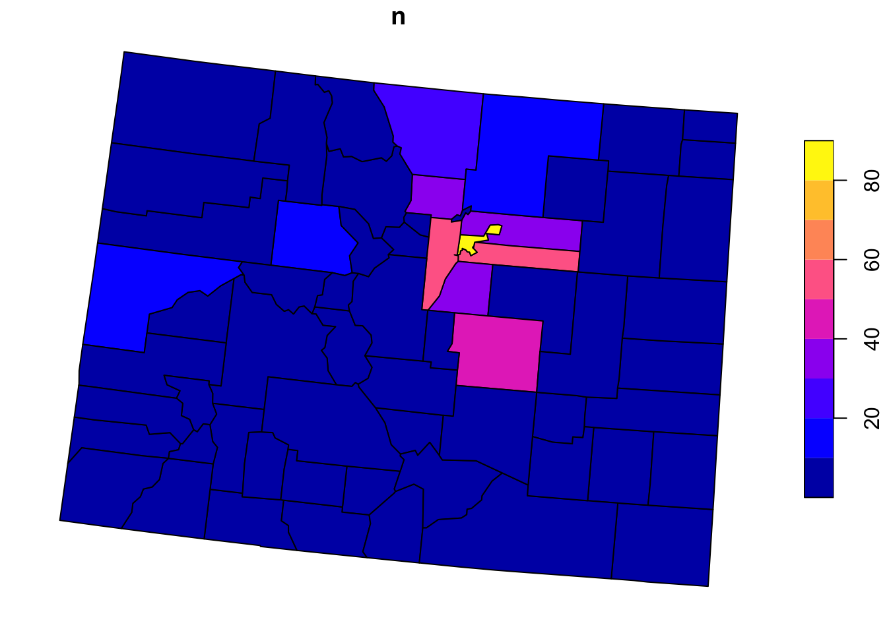
Now for Colorado?
We can anticipate that PIP is a useful process we want to implement over variable points and polygons pairs
So, lets make a function named point_in_polygon, that takes a point dataset and a polygon dataset
point_in_polygon = function(points, polygon){
st_join(polygon, points) |>
count(geoid)
}Test
co_sb = point_in_polygon(starbucks, co)
plot(co_sb['n'])
ca_sb = point_in_polygon(starbucks,
filter(counties, state_name == "California"))
plot(co_sb['n'])or_sb = point_in_polygon(starbucks,
filter(counties,
state_name == "Oregon"))
plot(or_sb['n'])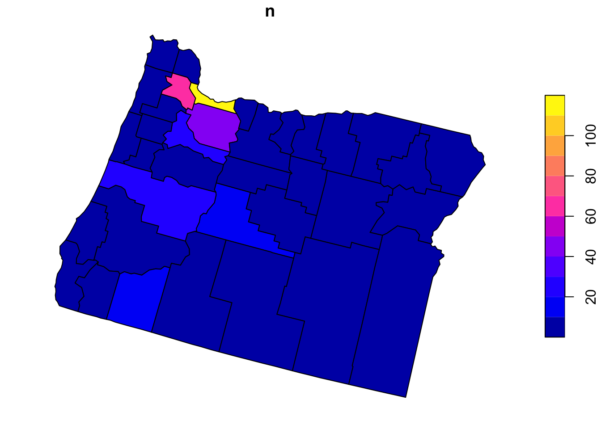
ny_sb = point_in_polygon(starbucks,
filter(counties,
state_name == "New York"))
plot(ny_sb['n'])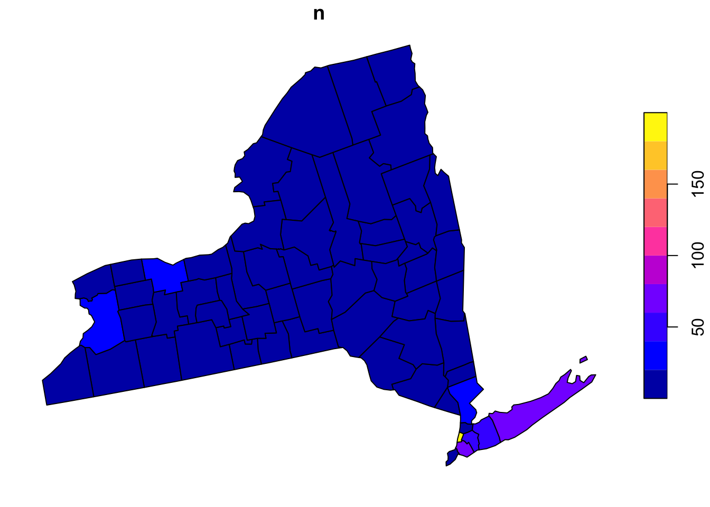
Generalizing the count variable
In its current form,
point_in_polygononly counts ongeoidLets modify that by making the variable name an input
- again, we use
get()to return the value of a named object - we call this, variable
id
- again, we use
point_in_polygon2 = function(points, polygon, var){
st_join(polygon, points) |>
count(get(var))
}Applying the new function
- Here, we can apply the PIP function over states and count by
name
states = get_conus(us_states(), "name") |>
st_transform(5070)
state_sb = point_in_polygon2(starbucks, states, 'name')
plot(state_sb['n'])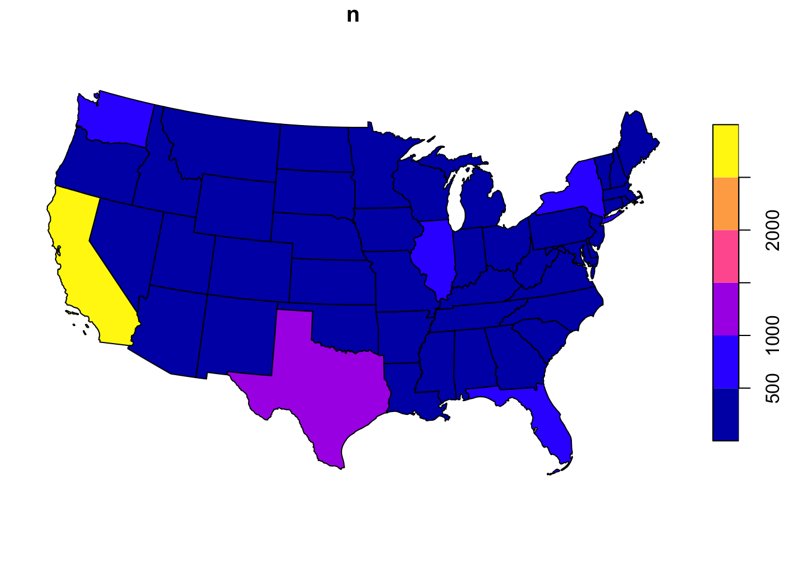
Optimizing functions
Lets apply our function over the counties and see how long it takes
We can check the time it takes by wrapping our function in
system.time
system.time({
us = point_in_polygon(starbucks, counties)
})
# user system elapsed
# 3.719 0.354 4.309 Thats not bad…
# How many seconds per point?
(point_per_sec = 4.3 / (nrow(counties) * nrow(starbucks)))
#> [1] 1.036916e-07# How will this scale to our dams data
# (assuming the process is linear)
point_per_sec * (nrow(counties) * 91000)
#> [1] 29.31745~ 30 seconds to test ~282,100,000 point/polygon relations is not bad, but could be a bottle neck in analysis
Lets look at a common means for improvement…
To keep geometery or not?
Remember our geometries are sticky, that means they carry through all calculations - whether they are needed or not
We can ease alot of computational overhead by being mindful of when we retain our geometry data with our attribute data.
system.time({
st_join(counties, starbucks) |>
count(geoid)
})
#user system elapsed
#3.970 0.421 5.521system.time({
st_join(counties, starbucks) |>
st_drop_geometry() |>
count(geoid) |>
left_join(counties, by = 'geoid') |>
st_as_sf()
})
# user system elapsed
# 0.396 0.017 0.598# How many seconds per point?
# How many seconds per point?
(point_per_sec = .598 / (nrow(counties) * nrow(starbucks)))
#> [1] 1.442037e-08
# How will this scale to our dams data
# (assuming the process is linear)
point_per_sec * (nrow(counties) * 91000)
#> [1] 4.077171Awesome!
Effectively a 86% decrease in time needed ((29-4) / 29)
“Function-izing” our improvements
point_in_polygon3 = function(points, polygon, var){
st_join(polygon, points) |>
st_drop_geometry() |>
count(get(var)) |>
setNames(c(var, "n")) |> #<<
left_join(polygon, by = var) |>
st_as_sf()
}What else can we wrap?
What about a really nice, clean, informative plot?
ggplots look great but can be time consuming to program…
A function would allow us to take care of the groundwork
plot_pip = function(data){
ggplot() +
geom_sf(data = data, aes(fill = log(n)), alpha = .9, size = .2) +
scale_fill_gradient(low = "white", high = "darkgreen") +
theme_void() +
theme(legend.position = 'none',
plot.title = element_text(face = "bold", color = "darkgreen", hjust = .5, size = 24)) +
labs(title = "Starbucks Locations",
caption = paste0(sum(data$n), " locations represented"))
}- This is great because we can devote the time to making a nice plot and we will be able to recycle the work over other cases…
Test
point_in_polygon3(starbucks, filter(counties, state_name == "California"), "geoid") |>
plot_pip()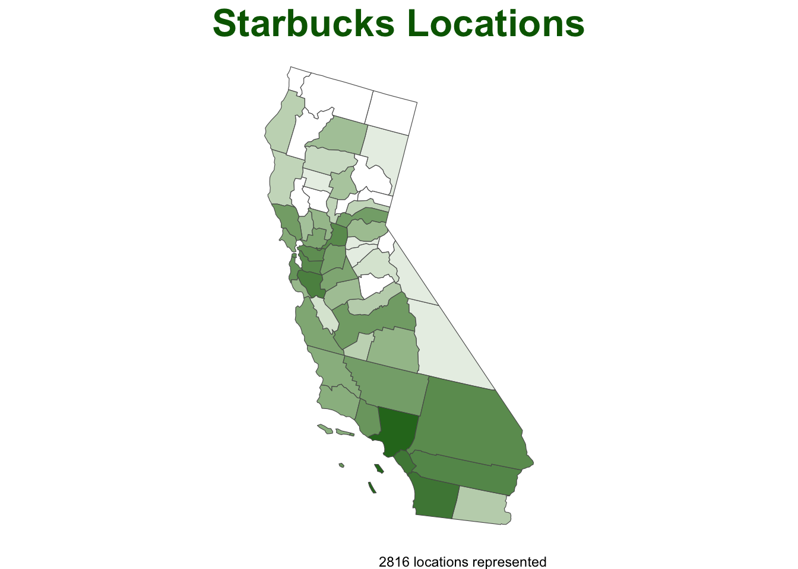
point_in_polygon3(starbucks, filter(counties, state_name == "New York"), "geoid") |>
plot_pip()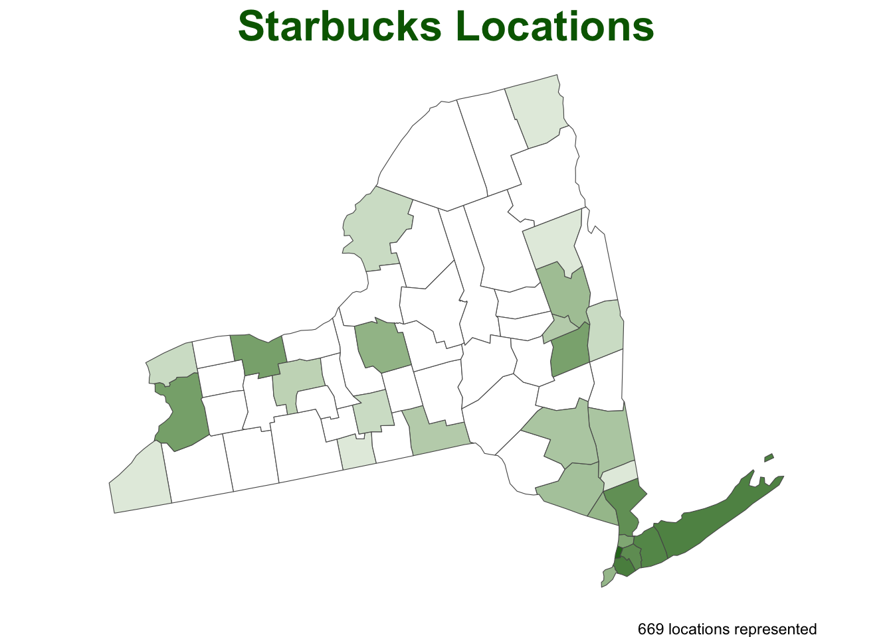
point_in_polygon3(starbucks, counties, "geoid") |>
plot_pip()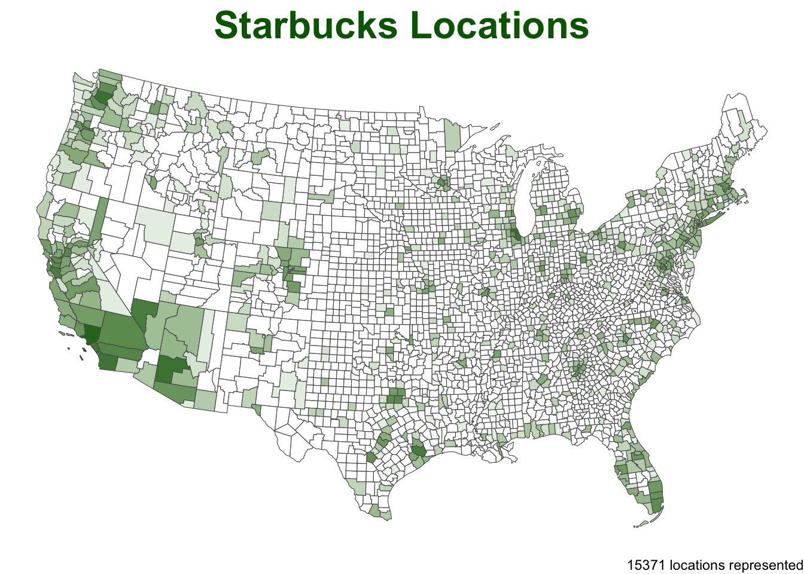
point_in_polygon3(starbucks, states, var = "name") |>
plot_pip()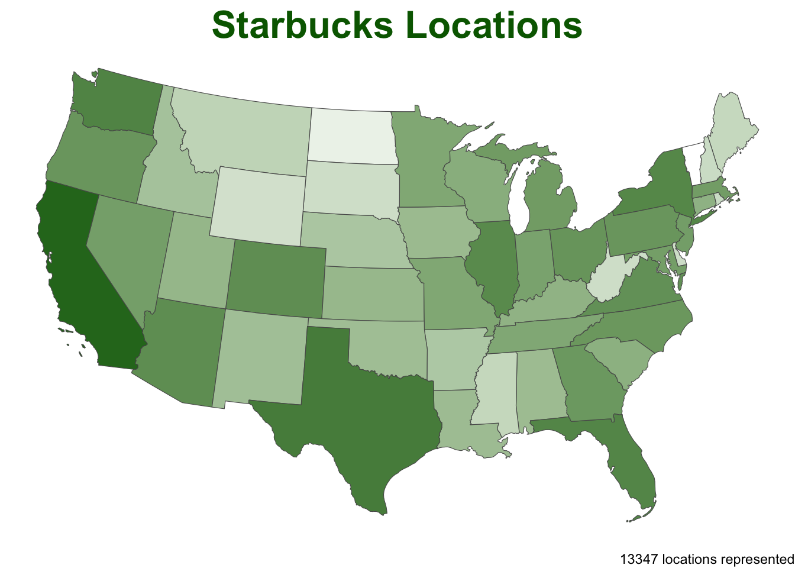
Moving beyond Starbucks?
Here is a nice tutorial of point-in-polygon in QGIS. It is looking at earthquakes by country.
Just like us they use
naturalearthdata for the polygon areasAnd they are looking at earthquake data maintained by NOAA.
In R, we can read the NOAA data directly from a URL.
The data is a tab delimited txt file so we use
readr::read_delim()
sf::sf_use_s2(FALSE)
countries = st_as_sf(rnaturalearth::countries110)
quakes = 'data/earthquakes-2025-03-29_21-55-22_-0600.tsv' |>
read_delim(delim = "\t") |>
filter(!is.na(Latitude), !is.na(Longitude)) |>
st_as_sf(coords = c("Longitude", "Latitude"), crs = 4326) |>
st_transform(st_crs(countries))
nrow(countries)
#> [1] 177
nrow(quakes)
#> [1] 6443
nrow(st_intersection(quakes, countries))
#> [1] 4317PIP –> Plotting Method
We can use our functions right out of the box for this data
But… somethings are not quite right..
point_in_polygon3(quakes, countries, var = "ADMIN") |>
plot_pip()
#> although coordinates are longitude/latitude, st_intersects assumes that they
#> are planar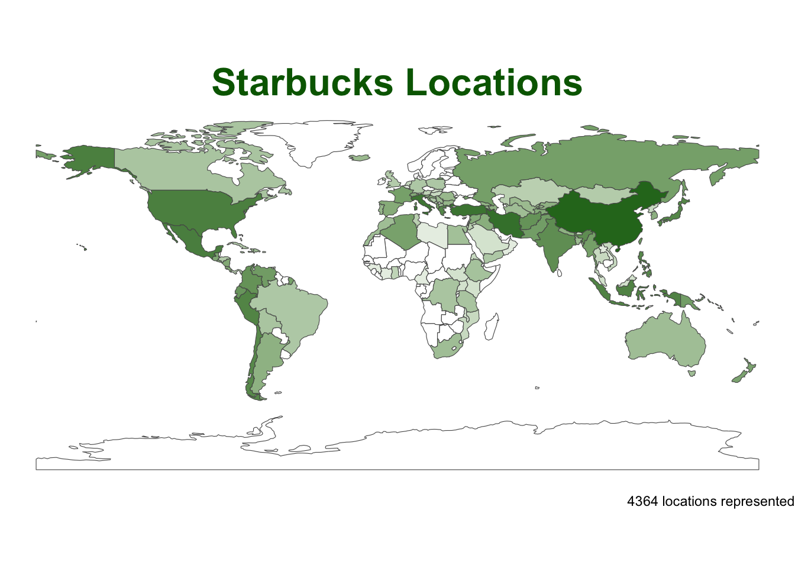
Modify for our analysis …
point_in_polygon3(quakes, countries, var = "ADMIN") |>
plot_pip() + #<<
labs(title = "Earthquake Locations") +
scale_fill_viridis_c() +
geom_sf(data = quakes, size = .25, alpha = .05, col = 'red')#> although coordinates are longitude/latitude, st_intersects assumes that they
#> are planar
#> Scale for fill is already present.
#> Adding another scale for fill, which will replace the existing scale.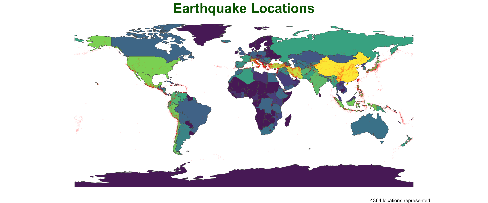
Improve the anaylsis…
point_in_polygon3(quakes, countries, var = "ADMIN") |>
plot_pip() +
labs(title = "Earthquake Locations",
subtitle = "Most impacted countries") +
theme(plot.subtitle = element_text(hjust = .5),
plot.title = element_text(color = "navy")) +
scale_fill_viridis_c() +
geom_sf(data = quakes, size = .3, alpha = .05, col = 'red') +
gghighlight::gghighlight(n > (mean(n) + sd(n)))#> although coordinates are longitude/latitude, st_intersects assumes that they
#> are planar
#> Scale for fill is already present.
#> Adding another scale for fill, which will replace the existing scale.
#> Warning: Could not calculate the predicate for layer 2; ignored